深度閱讀

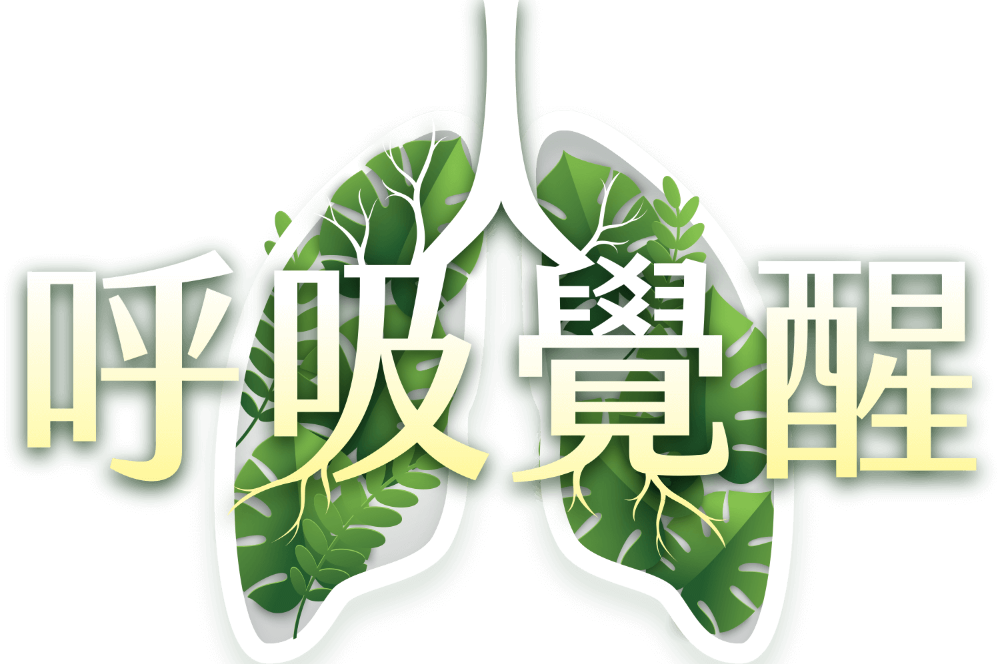
＃氣候變遷＃空汙減碳＃永續健康
為什麼需要呼吸覺醒
你有想過吸進的每一口空氣，會讓你生病嗎？
20年前，康健雜誌在<水與癌症>調查發現，台17線河流下游的濱海路段，竟是一條癌症公路，試圖用議題推動環境改革，呼籲台灣重建基層公衛防疫網。
20年後，康健雜誌在<新國病大調查>觀察全台癌症地圖，剖析肺癌如何成為台灣死亡人數長年穩居第一奪命腫瘤，吸菸率30年降六成，肺癌增加4倍，70％女性肺癌原因不明，發現禍首竟是空氣污染，每個人每一口呼吸裡的髒東西都可能導致癌症的起因…
論壇直擊
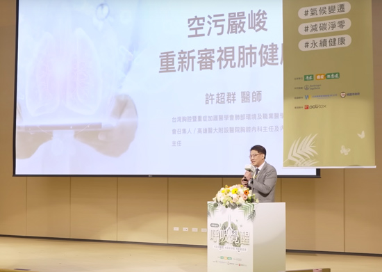
醫療變革空污嚴峻，重新審視肺健康
專家｜
台灣胸腔暨重症加護醫學會肺部環境及職業醫學委員會召集人
高雄醫大附設醫院胸腔內科主任 & 內科部主任 許超群
空氣汙染會對人體產生直接的呼吸道傷害，包括肺氣腫、肺阻塞（COPD）及慢性氣管炎等。而造成、或惡化的危險因子，如吸菸、空氣汙染及家族基因史等等。
我是高危險群嗎？罹患肺阻塞的治療方式有哪些？如何簡易自我判斷？
你呼吸對了嗎？
在全球氣候變遷、職業環境及個人警覺性下，空氣中瀰漫著各種隱形危機，導至罹患胸腔與呼吸道相關疾病盛行率不斷提升。你曾想過自己所處的環境中，有多少的致病因子嗎？你做過肺功能檢測及護肺保健觀念嗎？
根據下面三個問題，哪個描述最接近你呢？
-
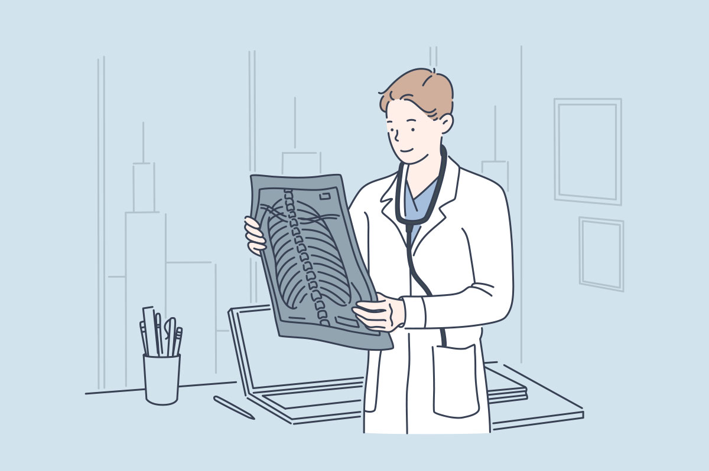Q3. 我曾經做過肺功能檢查？看更多
 小知識
小知識
您很有健康、及保健身體的概念呢！定期追蹤肺功能外，也別忘了生活周遭的危險因子喔！
小知識
可上各大醫療院所查詢「肺功能檢測」服務，或自費健檢時，可增加肺功能檢查項目，掌握肺部狀況。檢查前請配合醫事人員的指示（如前4小時請勿吸菸及喝咖啡），也別忘了定期檢查之必要喔！
-
什麼是肺功能檢測？
肺部是人體外呼吸與內呼吸的中心樞紐，要掌握肺部健康狀態，肺功能檢查是其中的檢測指標之一，可評估肺活量及呼吸道暢通程度，了解是否有肺部疾病或肺功能異常。
哪些人需要做肺功能檢測？-
20到25歲民眾
可檢查一次肺功能，建立健康履歷。檢查結果為健康者，40歲到50歲再做一次。
- 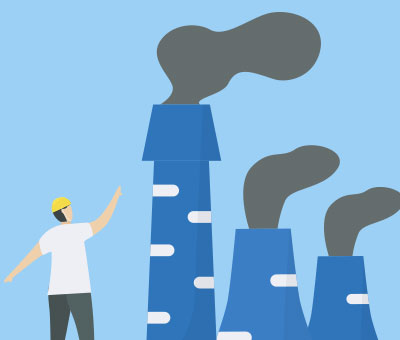
- 於高風險的職業環境者
- 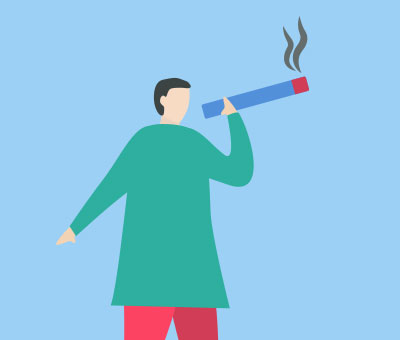
- 吸菸、或長期接觸廚房油煙者
肺功能檢查怎麼做？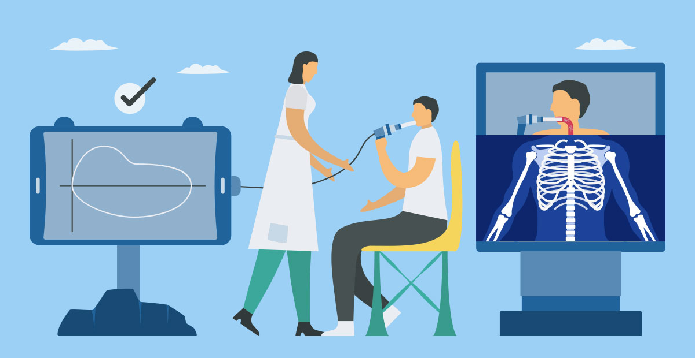肺量計的原理是請受檢者在平靜呼吸後，用力吸飽氣後，再用力吐完氣。 可得到呼氣／吸氣的流量變化，也是診斷慢性阻塞性肺炎(COPD) 的臨床方法。其檢查結果會因受檢者吹氣、換氣技巧而影響最終檢測結果，可搭配影像診斷學（如胸部X光檢查、胸部電腦斷層檢查）及聽診等一起列入判斷結果之參考。
日常護肺原則-
戒菸及二手菸：吸菸是慢性阻塞性肺病的最主要成因，戒除菸癮能有效降低罹病風險，並減緩病情惡化。
-
工作場合的預防：在充斥粉塵或是煤、矽、棉絮等空氣懸浮物的工作環境時，應確實戴上具有防護效力的口罩。
-
生活上的預防：做菜時應避免吸入過多油煙。如果出現空氣警示，可戴上具有防護效力的口罩，以防吸入過多的PM2.5。
-
20到25歲民眾
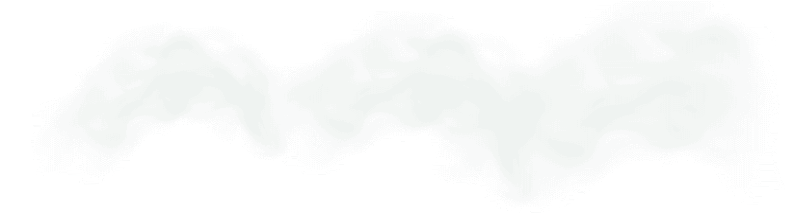
空氣品質與氣候變遷為共伴效應，一體兩面
大量排碳就會造成極端氣候，破壞環境，迫害健康，聯合國「2030永續發展目標」（SDGs），其中「健康與福祉」更指出全球應以在2030年前，大幅減少危險化學物質、空氣汙染、水污汙等，造成的死亡及疾病人數為目標，同時台灣也宣布將在 2050 年達成淨零目標。
台灣慢性病死亡率與
pm2.5濃度地圖
-
芝加哥大學能源政策研究所（EPIC）《空氣質量壽命指數報告》指出，顆粒物空氣汙染使全球人類預期壽命平均縮短近2年。
-
空汙嚴重的雲林縣，每年有許多人死於肺癌、中風、缺血性心臟病和慢性肺病，而這些死亡人口中，估計有22%是PM2.5造成的；在花蓮縣，僅有9%的4大慢性病死亡與PM2.5有關。由於全國人口主要居住在空汙較嚴重的西半部，因此平均而言，全國有19%的4大慢性病死亡與PM2.5有關。
-
空氣汙染並不是一項「公平」的公害，居住在中南部的人們，所承受的代價遠比北部都會區的人們要高上許多。
-
雲林縣PM2.5年均值高達三十四居冠，嘉義、屏東、高雄甚至離島金門也統統超過WHO標準。在醫師眼中，已經是對所有年齡層的民眾都會產生健康危害的等級。
- 全民永續行動
捍衛呼吸權 - 氣候變遷空汙減碳永續健康
邀您一起重視每一口呼吸
定期檢測肺功能
為了守護自己與下一代的健康!
專家觀點
俞松良
-
台大醫學檢驗暨生物技術學系/研究所教授
-
中研院化學所特聘研究員
俞松良
-
台大醫學檢驗暨生物技術學系/研究所教授
陳玉如
-
中研院化學所特聘研究員
- 前瞻研究
- 從台灣癌症登月計畫 展望早期非吸菸肺癌之精準防治曙光
看更多
簡又新
-
中華民國無任所大使
-
台灣永續能源研究基金會董事長
- 洞見未來
- 氣候變遷與健康永續之道
看更多
彭啟明
-
天氣風險公司總經理暨台灣氣候聯盟秘書長
- 監測風險
- 氣候變遷與健康關鍵報告
看更多
許超群
-
台灣胸腔暨重症加護醫學會肺部環境及職業醫學委員會召集人
-
高雄醫大附設醫院胸腔內科主任&內科部主任
- 醫療變革
- 空汙嚴峻，重新審視肺健康
看更多
蘇大成
-
台大醫院環境暨職業 醫學部主任
- 預防保健
- 企業與個人的綠肺生活指南
看更多
王明鉅
-
桃園市政府副市長
- 城市對策
- 桃園擴大肺癌篩檢計畫的超前部署
看更多
精彩花絮
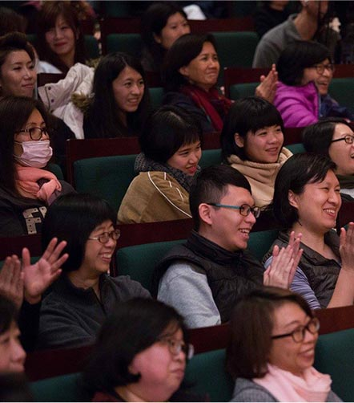
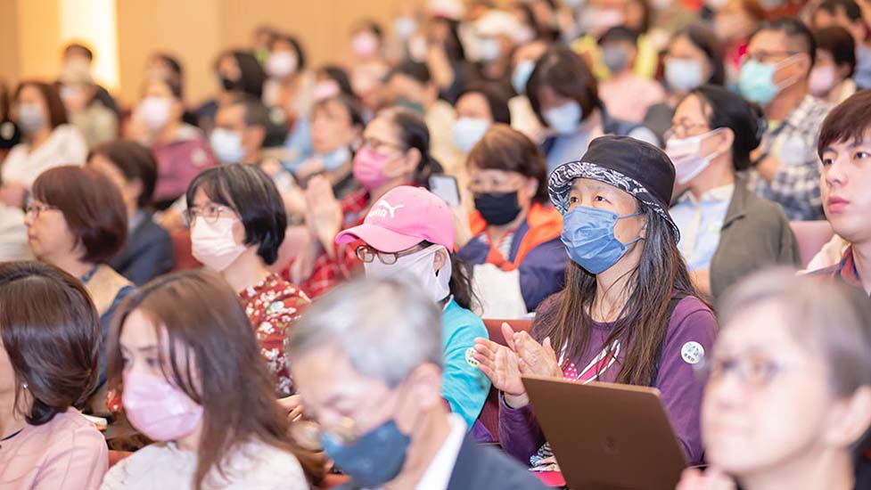
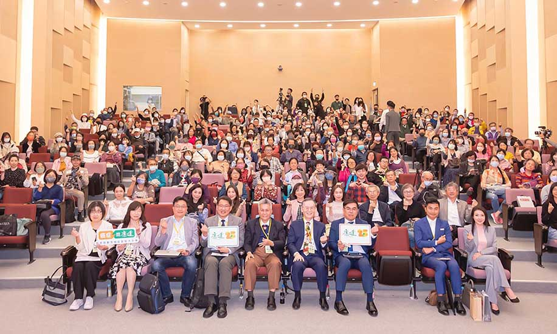
- 空汙危害健康
對企業 / 員工有何影響嗎？ - 每天所處的工作環境，安全嗎？
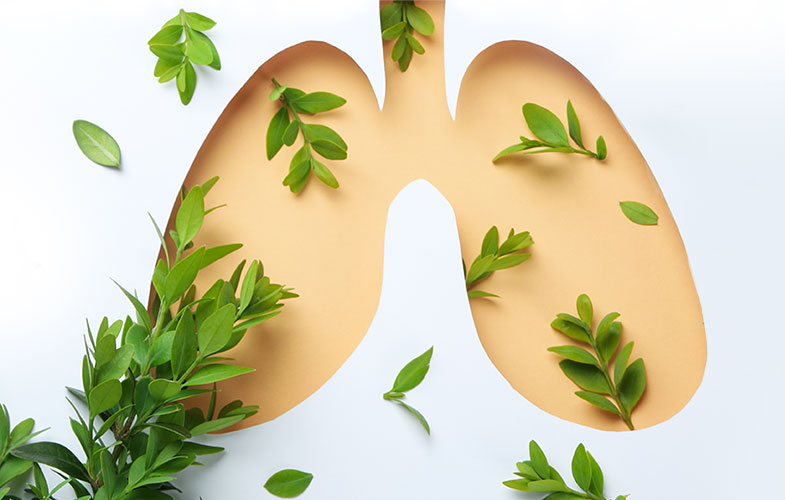
聽podcast